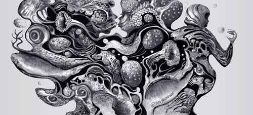

Jeanne Sturdevant
The Kiss
 |
| (1 of 8) |
 |
| (1 of 8) |
Jeanne Sturdevant writes, "My digital drawings are an extension of my work in other mediums. A graphics tablet and stylus makes drawing with virtual brushes as intuitive as drawing with charcoal, pastel, and pencil. The consistency of my organic style enables incorporating elements from my previous work and from digital photographs I've taken of textures and forms in nature.
"My art is about the changes that permeate and transform our lives. The titles suggest their meaning for me, but I aim for universality and encourage individual responses. My sources are diverse and often unknown -- even to me. Branching organic lines could reference rivers, blood vessels, or perhaps the veins in a leaf. I merge plant and animal, inanimate and animate. Sometimes a tree becomes a person or a person becomes a tree. I simply begin, respond to the evolving image, make numerous changes over the course of many work sessions, and continually evaluate composition until at last I am satisfied."